Tourist Guide
|
|
|
- Iraq's Resorts
- Nature Tourism
- Tourism Attraction in Al-Basrah
- Archeological Tourism
- Archeological Attractions in Al-Najaf
- Archeological Attraction of Karbala
- Archeological Attraction of Babil
- The Archeological Attractions in Al-Mosul
- Archeological Attractions of Duhok
- Archeological Attractions in Salah Al-Din
- Medical Tourism
- Tourism Facilities under the Tourism Board
Erbil's Resorts |
| Bekhal Waterfalls: These waterfalls are located in Arbil Governorate and considered among the most beautiful tourist places in Iraq. These thundering waterfalls are characterized by their beautiful landscapes, cold water and verdant trees. The waterfalls are located about 10 km from Ruwanduz. | 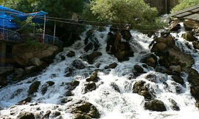 | Salah Al-Din Resort: It is located on Birmam Mountain and can be reached through 14 helical cycles. The height of the said mountain is 1090 m above the sea level, the highest summer temperature there is 36 0C. The resort lies on a wide area which overlooks the plain between the city of Arbil from a side and Safeen Mountain to another. It is characterized by oak and cypress trees. | 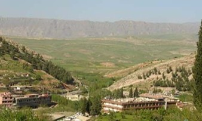 | Sreh Resh Resort: It is located about 9 km from Salah ad-Din Resort. The maximum temperature rate therein does not exceed 30 0C. |
| Harir Plain: It is renowned by its water springs, tobacco growing and honey production. It is also characterized by many archeological hills from several ages. Khlaifan Village, 21 km from Hareer Town, is located in a valley in which a branch of al-Zab al-A’ala (Higher Zab) passes. It is about 2 km from the entrance of the famous strait Galy Ali Bag. | 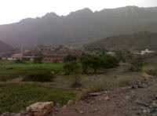 | Shanidar Cave: It is located in Shanidar area, to the left of Galy Ali Bag. It is the widest cave in the north of Iraq, wherein skeletons of Neanderthal were found. | 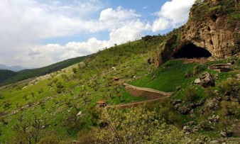 | Galy Ali Bag Strait and Waterfall: It is a 10 km long creek in a passageway between Korek and Nothanin mountains. It is located about 60 km from Shaqlawa Resort. The waterfall height is 800 m above the sea level. The maximum temperatures therein is 38 0C. | 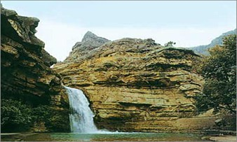 | Gendian Resort: It is located about 15 km from Khlaifan Village, and characterized by its high trees and fresh water. | 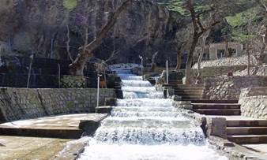 | Derbend Rayat Resort: It is located about 50 km from Gali Ali Bag Strait, on the way leading to Haj Omaran Resort. |
| Haj Omaran Resort: It is located at the northeast borders of Iraq, to the west of Hassarost Mountain, about 69 km from Gali Ali Bag waterfall, 170 m above the sea level. The maximum day temperature therein is 28 0C. | 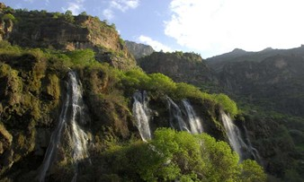 |
Duhok's Resorts |
| Swareh Tukeh: It is located about 22 km from Zawita and 112 km from al-Mosul, on 1507 m above the sea level. The temperature there does not exceed 33 0C. It is considered as one of the best northern summer resorts. It overlooks a deep valley surrounded by mountains from both sides to add to the place a wonderful climate comparable to the most beautiful resorts in the world, particularly for the polar and cypress trees surrounding it. There are modern hotel and casino amid the gardens which consist a part of Bamerni and Swareh Tukeh plains intervened by Swareh Tukeh range. Also, there are well furnished tourists cabins of various sizes. | 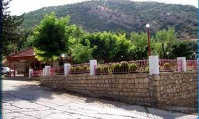 | Sersank: After leaving Swareh Tukeh, the main road is bent to the east. After some kilometers you reach Bamerni and Skryyin which is known by its water and grape orchards. On a distance therefrom, you reach Sersank (126 km from al-Mosul), one of the most attractive resorts in Iraq. Sersank Resort is on 1046 m above the sea level, the temperature therein does not exceed 34 0C. Sersank’s visitor is waited for by a beautiful climate, cold water flowing from high mountains, cypress and poplar forests and endless fruit orchards. In Sersank, there are many hotels, chalets and casinos and a nightclub. Everywhere there are restaurants, markets, children playgrounds, a summer cinema and a travelling theater, in addition to the folk cafes and stores. Also, there is a post office and a bank. | 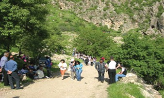 | Sulaf: Sulaf, 1150 m above the sea level, is located in a beautiful mountainous area, about 5 km before Amedi, under 25 m height waterfalls. Sulaf is known by the fruit trees, its multiple caves, such as al-Dafa cave, and verdant walnut trees. There are many private hotels and restaurants. | 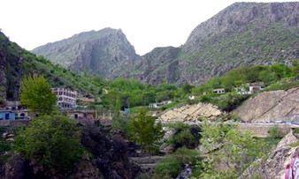 |
Sulaymaniyah's Resorts |
| Serchnar: About 5 km from Sulaymaniyah, Serchnar Resort is located amid a high-tree forest and waterfalls. It includes many chalets, hotels and cafes. | 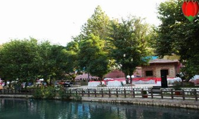 | Dokan Dam: About 71 km from Sulaymaniyah and 141 km from Kirkuk, the beautiful blue Dukan Lake, Rest House and many restaurants and cafes are located. | 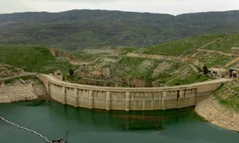 | Derbend Khan Lake: About 65 km from Slaymaniyah and 268 km from Baghdad, the beautiful Derbend Khan Lake is located. It is considered a suitable place to practice boating and other touristic activities. | 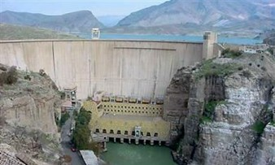 | Ahmed Awah: It is one of the most wonderful mountainous resorts. It can be reached through a well paved road. It is located about 75 km from al-Sulaymaniyah. | 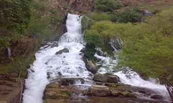 |
Kirkuk's Resorts |
| Baba Gurgur: The Eternal Fire in Baba Gurgur shows how oil is cheaply and economically extracted in Iraq. | 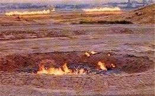 | Kirkuk Castle: It is one of the oldest surviving ancient monuments. | 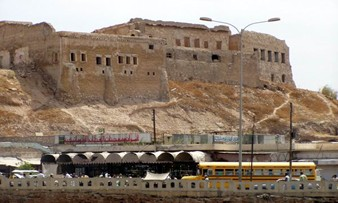 |
Lakes |
| Al-Thurthar Lake: It is one of the most beautiful artificial lakes in Iraq. It was formed after building Samarra’ Dam for irrigation and controlling the flood waters of Tigris and Euphrates. It may be reached from Baghdad via al-Fallujah and ar-Ramadi or from Samarra’. Tourists may fish, swim and camp there. | 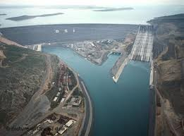 | Al-Habbaniyah Lake: It is a depression located to the south of the city of ar-Ramadi, the purpose of which is to store B3.3 cubic meters and return B2.7 cubic meters of water to Euphrates during summer. This project is controlled through ar-Ramadi Dam. Al-Habbaniyah Lake is Connected to ar-Razazah Lake from the south through a creek, so that the waters beyond the capacity of al-Habbaniyah Lake are drained to the B26 cubic meter capacity ar-Razazah Lake. A very beautiful resort was built there. Al-Habbaniya Resort, considered the biggest resort in the Middle East, is located about 84 km to the west of Baghdad on Baghdad –ar-Ramadi road, the area of which is about one square kilometer. It lies towards the lake for some hundreds of meters. Al-Habbaniya Resort consists of: -First class, six floor hotel. Its ground floor contains, in addition to the administration, reception and booking, a rest house, conference room, cinema, three restaurants and bars, winter and summer swimming pool, library and amusement arcade. Each of its six floors consists of 47 double bed rooms and six suites, totaling 600 beds. Each room contains a bathroom and a TV and is centrally air-conditioned. There is a nightclub in the upper floor of the hotel. -500 chalets, 300 of which are single room and 200 are double beds. They are furnished with latest model and air-conditioned in summer and winter. There are two swimming pools, for adults and for children, two elegant restaurants, various children playgrounds, youth center, clubs for boating and equitation, tennis courts, volleyball court, archery field, summer cinema and shopping center. | 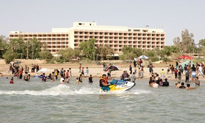 | Al-Razazah Lake: On the way from al-Ukhaidhir at about 18 km from Karbala, ar-Razazh Lake lies between Karbala and al-Anbar. It is 60 km long and 30 km wide. This wide beautiful lake has become an important resort visited by many of those who are willing to practice various types of water sports and fishing amateurs. |
| Sawa Lake: It is an inland salt lake located in al-Muthanna to the south of Iraq, about some kilometers from as-Samawa city. The Lake is surrounded by a natural lime wall, which automatically repairs itself when broken because the lime in water quickly solidifies. As well it contains some kinds of very small high fat fish which completely dissolve when cooked. The flow of underwater feeds this lake with water.
Residents in that area believe that the Lake’s water flooded extremely on the birth day of the Prophet Mohammed. That flood is considered as one of the historical events happened on the birth day of the Prophet Mohammed.
Sawa Lake is considered one of the most important characteristics of Iraq due to its unique constitution and the natural phenomena associate it. It differs from other lakes in several aspects, inter-alia, there is no surface water flow to feed it, rather it depends on springs and the water flows from creeks under. The Lake is on 5 m above the sea level; thus it may not be seen only from very short distance. | 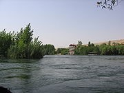 | Ain Tamur: Ain Tamur (Shthatha) city is located about 76 km to the southwest of Karbala. It is an ancient area which carries cultural impressions. Ain Tamur sub-district is the largest oasis in the Western Plateau and is known by palm forests, meadows and orchards. It is characterized by its beautiful landscapes, pleasant atmosphere in Spring and Autumn and the abundance of mineral water flowing from more than fifty natural springs. There is a resort includes 20 suites, a restaurant and a bar in addition to wide gardens. |  | Al-Mosul Dam: It is located on Tigris about 60 km to the north of the city of al-Mosul, and was erected in 1986. Its length is 75 km, from the dam’s site to the Iraq-Turkey borders. The area of its lake is about 220 km2, where a beautiful resort was built, to include many beautiful chalets and facilities. | 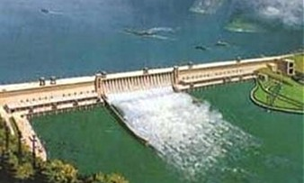 |
Tourism Attraction in Al-Basrah |
| Al-Sindbad Islan: Is an attractive tourist area in al-Basra. It is located amid Shat al-Arab, opposite Shat al-Arab Hotel in al-Ma’qal, and connected to the river’s two banks by as-Sindbad Bridge. It includes wide gardens with beautiful fountains and high trees. There are conveniences for visitors, such as touristic class casino, refreshment shops and staying chalets. Also, there is the floating hotel anchored near the Island, and the wide casino established on the south end of the Island. | 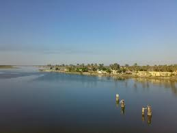 | Local Government Bahu (Lobby): Is located at Dinar Street, which connects al-Ashar to al-Ma’qal. Its total area is about 32,800 m2. It includes a swimming pool, big theatre, club, nightclub, restaurant and casino, in addition to many staying rooms equipped with cutting-edge conveniences. All the area, surrounding these facilities, is covered with luxuriant gardens. |
| Al-Qurna City: Is located about 74 km to the north of al-Basra. It is the mythical place of Adam’s Tree and Eden, where Tigris and Euphrates meet to pour out into Shat al-Arab. Many farms and palm orchards are proliferated there. Also there is a rest house which spacious balconies overlooks the two rivers’ meeting. | 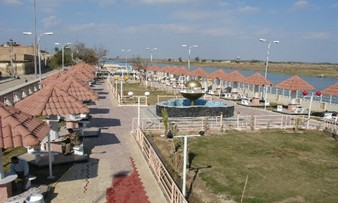 | Abu al-Khaseeb: There is a modern restaurant in Abu al-Khaseeb district, the city of the great poet Badr Shakir al-Sayyab and the center of the palm forests which are characterized by their unusual fascinating landscapes located at Shat al-Arab at about 26 km to the south of al-Basra. | 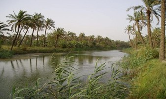 | Safwan City: In Safwan, at the Iraq-Kuwait borders, there is a tourist class hotel and restaurant to secure the conveniences for citizens and tourists. |
|
Archeological Tourism |
| About Baghdad: Baghdad, the capital of the republic of Iraq, is prosperous city of the honored past and shining present. Tigris penetrates the City to bisect it into al-Karkh and al-Rusafa sides which are connected by several modern bridges. Every side includes many streets, the most important of which is, in al-Rusafa side, al-Rasheed Street, which lies through the heart of Baghdad, from Bal al-Mu’adham to Bab el-Sharqi. It is considered the commercial center of Baghdad, on its both sides most of old and new Baghdad’s markets are located, and parallel to it al-Khulafa Street is located which includes several State departments, mosques and historical churches. Also there is as-Sa’dun Street which starts from al-Tahrir (Liberation) Sq. and ends in al-Masbah section. This street includes most of the excellent and first class hotels, cinemas, airlines’ offices, travel and tourism agencies and some State departments. Parallel to this street, there is Abu Nuwas Street which lies from Jumhouriya Bridge to al-Jadriya section, and considered the main corniche in Baghdad and the most important tourism street therein.
In al-Karkh side, there is the most important Damascus Street. It lies from Damascus Sq. to the International Airport Street. Baghdad International Fair, International Railway Station and al-Zawra’ Park are located thereat. | 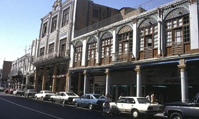
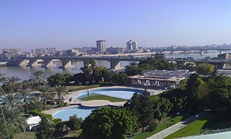
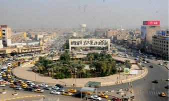 | Al-Mustansiriyah School: It is one of the most important faculties of the Islamic realm during the Abbasid age. It gained a particular importance for teaching Arabic, religion, astronomy, mathematics, medicine and pharmacy. It involved a hospital for training its students.
The school, located in al-Rusafa side near al-Shuhada Bridge, overlooks Tigris. It was built during the reign of the Abbasid Caliph al-Mustansir Billah, named after him. He is the thirty seventh Caliph whose caliphate continued from 623 AH/1226 AD to 640 AH/1242AD. Building the School took six years, from 625 AH to 631 AH. The Abbasids appropriated for it around three quarters a million gold dinars. To perform its tasks, the endowments appropriated for it amounted to a million gold dinars to yield an annual income of seventy thousand gold dinars. The school has been built on a nearly rectangular layout of 104.8 m long, 44.2 m wide from north and 48.8 m wide from south, to constitute a total area of 4,836 sq. meters. Yet, the indoors area is 3,121 sq. meters. The plaza amid the school is of 1,710 sq. m area. Fully opened Iwans (building units roofed by cellars and beautiful ornaments) overlooks the plaza. The School included two storey residence rooms for students, a study and a library involved around eighty thousand books, in addition to a pharmacy, hospital, orchard, Hadiths house and Kuran house.
Chronologically, al-Mustansiriyah School is renowned by its distinguishable clock which determined the time astronomically; in addition to determining hours, it points the locations of sun and moon all the time, as well as other strange mechanical works done by its parts.
|
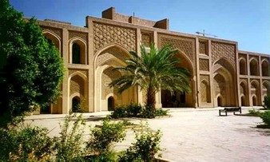
| Al-Qasr al-Abbasy (The Abbasid Palace): It is, one of the important buildings in Baghdad, dates back to the second Abbasid age, located near Bab el-Mu’adham on the river side. Researchers attribute its building to the Caliph al-Nasir li-Din Allah (575 AH/1179 AD – 623 AH / 1225 AD), in whose reign most of Baghdad’s attractions were built. The Palace is composed of a central plaza and two storey rooms, adorned by brick made stalactite works. A facility in the Palace is an Iwan which frontage and ceiling are adorned with brick ornaments. During the maintenance of the Palace, an Iwan was built in front of it to the river side. Due to the similarity between the facilities of this building with those of al-Mustansiriyah School, some say it is al-Sharabiyah School which was mentioned in some historical resources. The State Board for Mouments and Heritage performed maintenance on some parts of this building; when finished, some ancient monuments representing the Islamic history of Iraq were displayed.
|  | Al-Murjaniyah School: Al-Murjaniyah School, nowadays known as Murjan Mosque, is located in al-Shorja area in al-Rasheed Street. It was named after Ameen ad-Din Murjan, who built it in 758 AH/1357 AD; i.e. around 100 years after the end of the Abbasid age. First it was identical to al-Mustansiriyah School due to containing studying and residence rooms. In the beginning of the past century, the School was demolished and a mosque was built in its place. Only some parts of the School survive. | 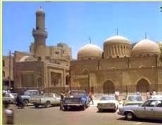 | Baghdad Wall and its Gates: When Abu Ja’far al-Mansur laid plan for the city of Baghdad, he adopted circular layout for its walls and four perpendicular entrances, for defense purposes. He laid plans of the prominent administrative and religious buildings amid the city for ease access by people. After the capital was moved to Samarra’ in 221 – 222 AH/836 AD, it was returned to Baghdad in 279 AH/892 AD; there was a constructional expansion, and the erection of the eastern side of Baghdad Wall was began by the Caliph al-Mustarshid Billah in 512 AH/1118 AD – 529 AH/1135 AD). The wall survived until the 13th Hijri/ 19th Gregorian Century.
The eastern Baghdad Wall composed of a thick brick wall, supported by many towers, in front of which a deep moat connected to Tigris and surrounded by a dam. The most important gates of the eastern wall were Bab el-Mu’adham, Bab al-Dhafriya (al-Wastany), Bab al-Halaba and Bab al-Basliya.
None of these gates, except al-Bab al-Wasatani, survives. It is located near the Shrine of Omar al-Sahrawardy – Shaikh Omar St. The Gate, consisting of a high cylindrical tower, 57 m base circumference and 14.5 m high above surface, is overtopped by an octagonal dome. To its northwest, there is 3 m wide door overtopped by a tapered arc, in front of which there is a bridge above the moat. To the southwest of the tower’s room, there is a door leading to a bridge, bigger and higher than the aforementioned one, lies over the moat.
During the huge construction works in Iraq, the workers of the expressway found near Bab al-Sharqi some parts of old building. It has become clear that it is Bab Al-Halaba, or the Tulsam, which was demolished by the Ottomans in 1917. The time of renovating this Gate dates back to 618 AH/1221 AD.
| 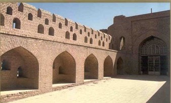 | Tel Harmal (Harmal Hill): It is an important archeological site in Baghdad al-Jadeeda. Harmal is the recent name, while the original was Shadobom. It was an administrative center of the Ashnouna Kingdom which capital was in Tel Asmar in Diyala Governorate. The City was first inhabited during the Akkadian age and the Third Dynasty of Ur. However the importance of the City increased in the middle of the Old Babylonian Period, some 3,800 years ago.
On this City’s outskirts a new fence surrounding it can be seen, when entered several buildings can be seen inside irregular rectangular wall, 147 m long and 98 m wide. To the northeast there is a wide door with two towers on both sides, from which the main temple (the biggest building discovered, 28x18m) is seen. Also, there can be seen two small temples, maintained and roofed.
The importance of Tel Harmal is not limited to its buildings; yet, it was a scientific and administrative center. The clay tablets found by the archeologists contains explanations for very important geometrical and mathematical issues, inter-alia, a case of triangles’ similarity was attributed to Euclid, the Grecian scientist, who is born some seventeen centuries after the beginning of the Old Babylonian Period.
The clay tablets included lengthened multiplication tables, numbers’ various powers and roots, numbers’ inverse tables for division and problems solved by what is nowadays known as logarithm. In addition to lingual and literature dictionaries, and evidence of geographical names.
|
| Aqar-Quf (Dur-Kuriglazu): It is an important archeological city. It was built according to the Sumerian-Babylonian architectural principles, some 30 km to the northwest of Baghdad center, upon an order from King Kuriglazu I; the city named after him. The time of building it dates back to the beginning of the fifteenth century BC.
Aqar-Quf was built on a very long rectangular plan, over a tongue of natural limestone. The City obtained water from a great river fed by Euphrates known as Isa Canal, by the Babylonians as Patti-Enlil; i.e. the God Canal. The biggest temples of the City were devoted to that God, the God of creation and of air.
The most prominent monument you may see is the square base (67x69 m) Ziggurat, which stands to a height of 57 m over the surrounding plain. The remaining of the Ziggurat is covered with tiles and adorned with indentures. Above this part, other parts of the building core, built with bricks, are raised. Mats and ropes are placed between each 8-9 layers of bricks, to make the building as a one block and to prevent moisture. The first storey is supplied with a central and two side stairs. In addition to this grandstand edifice, a set of temples were discovered near the Ziggurat, while the remaining of the City’s palaces were discovered at about a kilometer to the southwest of the Ziggurat. Settlement in the City continued after establishing it through the Neo-Babylonian Period, yet even through some Islamic ages.
| 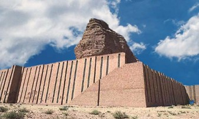 | Al-Mada’in: It is an important archeological city, which ruins stand on the east bank of Tigris some 30 km to the south of Baghdad center. Building it dates back to the second century BC. One of its most prominent milestones is its high arc (Taq-I Kisra), which is a part of a great palace near Tigris. It dates back to the middle of the third century AD. This Taq is considered one of the biggest and highest brick built arcs in the world. The style of its building is developed from ancient Iraqi architectural styles; the idea of Iwan is developed from the old Iraqi buildings – The frontages of city’ entries and some Assyrian palaces show a clear sequence of the development of Iwan idea. | 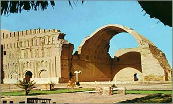 |
Archeological Attractions in Al-Najaf |
| Al-Emara (The Emirate) Palace: It is located beside al-Kufa Mosque, its history is connected with the city of al-Kufa (established in 17 AH). Al-Baladhuri and al-Tabari mentioned in their narrations that building al-Emara Palace coincided with the inception of al-Kufa city demarcation. Al-Emara Palace witnessed three ages; the Rashidun, Umayyad and Abbasid, and there is a course represents the Elkhaniyah Period. Neglecting al-Emara Palace began after its losing the official task as a headquarter for the governors. The palace was exposed to a great way through the second course, which might be the reason behind deserting and leaving it. Thereafter, there was a series of attacks by the people of Muawiah 1 such as the Qarmatians, on the city of al-Kufa. These attacks effected on the construction of the Palace and its oblivion. Nothing from the Palace survives but its foundations. |
| Khan Al-Rahba: Khan ar-Rahba (Ar-Rahba Inn) is located at the old Hajj road, in a depressed area, some 30 km from ar-Rahba Village. This inn is built from stone and gypsum. Its units are roofed with domes. The Inn’s dimensions are (80 – 110 m). It includes half circular towers at the corners. The main entrance of the Inn is large, amid the eastern side and jutting out of the side at about 15m. | 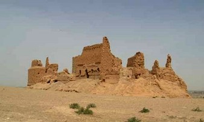 | Khan Al-Shilan: It is located amid an-Najaf City, in the beginning of al-Khawarnaq St. It dates back to the end of the Ottoman age and was built by a charitable man for the purpose of lodging the visitors of the Holy City of Amirol Mo’minin during the seasons of visits and religious events. When it was completed, it was not used for the aforementioned purpose, rather it has become a headquarter of the Ottoman Governor in the Holy an-Najaf. The Inn has many historical happenings, for example, when a group of revolutionists besieged the Ottoman governor of the Holy an-Najaf. | 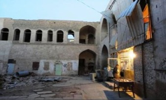 | Bahr Al-Najaf (Al-Najaf Sea): It is an origin of the name of (Najaf), which was formerly called (Ney Jaf). This Sea (lake) is one of the most important phenomena. It is a breaking line resulted from a breaking movement of the crust of the earth which caused its depression; this is evidenced by the longitudinal shape of the high eastern edges. | 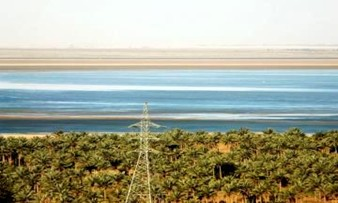 | Na’aman Palace: It is one of the palaces in the old Al-Hirah Kingdom and the State of Achaemenides Lakhmids, both of which had a great weight in the pre-Islamic Arab History. Their monuments survive to keep in pace with the history. Poets eulogized their ruins and antiquities. | 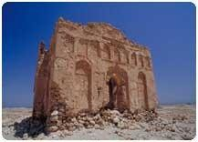 |
Archeological Attraction of Karbala |
| About Karbala: Karbala is considered as the Iraq’s city of high domes and minarets. It dates back to the Babylonian age. The history of Karbala almost starts with the murder of Imam Husayn ibn Ali and his comrades therein in 61 AH. Since that time, this city enjoyed a religious standing for containing the tomb of Imama Husayn. | 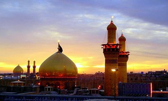 | Ukhaydir Fortress: It is one of the prominent archeological defense buildings, a distinguished military mark within the Islamic architecture with respect to design and engineering, not only in Iraq but all over the Arab and Islamic realm. The Fortress is located at a desert road which connects Iraq to the world, linking Aleppo with al-Basra. | 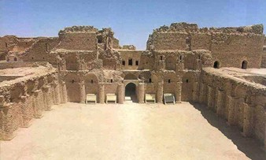 | Qatarat Imam Ali ibn Talib: It is located at the beginning of the road leading to al-Ukhaidhir Fortress, Ain Tamur. It is a miracle of Imam Ali during his return, with his army, from the Battle of Siffin. It overlooks Ar-Razazah Lake. | 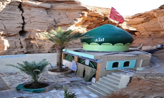 | Al-Uqaisir Archeological Site:
Al-Uqaisir area, to the northwest of al-Ukhaidhir Fortress, consists of archeological hills and touristic Christians’ cemeteries. The drillings in the main hill in 1978-1979 resulted in discovering an eastern church dates back to the 1st Gregorian Century. Writings carved on gypsum were found thereat.
| 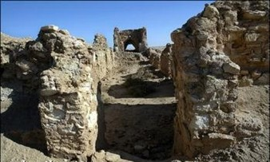 | Sham’un Palace: This palace is located in Ain-Tamur district, on the road connecting Ain-Tamur to ar-Razazah Lake. The building is attributed to a person called Sham’un ibn Jabir whose history goes back to the 6th Century and the beginnings of the 7th Century (Before Islam). It is built from stone, brick and gypsum. | 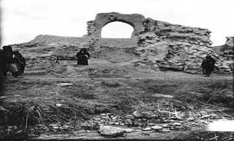 | Khan Al-Rubu’: It is located at one quarter of the way from Karbala to al-Najaf. It was dedicated as a convenience for the travelers and visitors who headed to the Holy Shrines in the past centuries. | 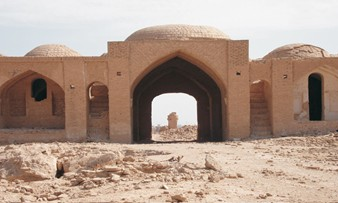 |
Archeological Attraction of Babil |
| Babylonia Ancient Monuments: These are located about 5 km to the north of al-Hilla City. It has become the most famous city in the ancient and the recent worlds. It turned into a wonder for the ancient world, especially after the greatest expansion thereto by the famous king of Babylonia, Nebuchadnezzar (605 – 562 BC), until it has become the title of the Mesopotamian civilization. Its walls and Hanging Gardens are among the Seven Wonders of the World. | 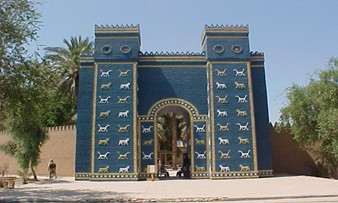 | Al-Birs: Al-Birs city is located about 15 miles to the south of al-Hilla. Its grandstand tower is a high mark on the way between al-Hilla and al-Kifl. Its current name, Al-Birs. |
|
The Archeological Attractions in Al-Mosul |
| Tel Nebi Yunus (Prophet Yunus Hill): It is located inside the archeological city of al-Mosul and includes the palace of Esarhaddon and the palace of Sennacherib. It is considered the most precious of the remaining of Nineveh city; It did not suffer from sabotage. | 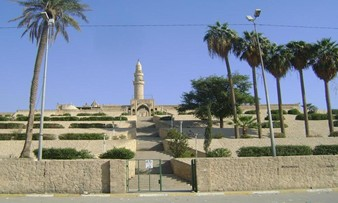 | Quenjeq Tel (Quenjeq Hill): It was discovered by the archeologist B. A. Buta, 1842 – 1851 AD, who unveiled the palace and the great library of Ashurbanipal.
| 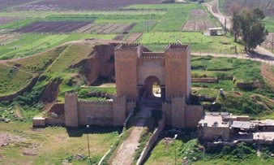 | Tel Al-Ramah: It is located about 80 km to the west of al-Mosul, and characterized by a ziggurat near a regular shape temple, which dates back to 1,800 BC. |
| Al-Mosul Wall: It is a 12 km circumference, rectangular shape, built from brown stone. it includes stone towers and has some gates, such as al-Imadi, al-Jassasseen, al-Maidan, Kinda, al-Sir, al-Iraq, Lakash, al-Qassabeen, al-Mashra’a, al-Jisr and al-Qal’a. The wall’s top ends with balconies followed by raised brick towers to constitute the second defense line. | 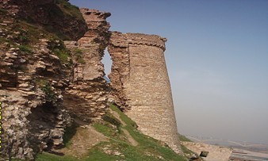 | Beshtabia Citadel: It dates back to the 6th Hijri Century. It had its role in the blockade of al-Mosul in 1156 AH. It has two doors, one leads to the river, called (Bab al-Sir), and the other leads to the opposite field, called (Bab al-Qal’a). Beshtabia means “The Great Citadel”. | 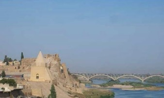 |
Archeological Attractions of Duhok |
| Amedi Citadel: It is one of the well-fortified citadels which played a prominent role in Iraq’s history throughout the old times. The elliptical shaped town is perched on a mountain, (144 m) above sea level, and is centered on a single piece of rock of limited area surrounded by the high mountains. This citadel has two entries, the first was called Bab Al-Zibar which led to az-Zibar district, while the second was called Bab Al-Mosul because people followed it to go to al-Mosul. It is named Amedi citadel after its founder Amed ad-Din Al-Zenki, who built it in (537 AH). It is located about
(90 km) from Duhok center, to which it is connected by a paved road. | 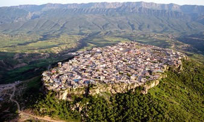 | The Abbasid Bridge: This stone built bridge is located on al-Khabur river in Zakho, some (55 km) from Duhok center to which it is connected by paved road. | 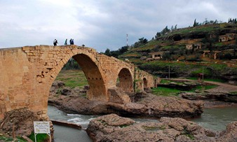 |
Archeological Attractions in Salah Al-Din |
| Samarra’ City: It is one of Iraq’s ancient Islamic cities. Actually, it is one of the greatest Islamic realm cities. Thus, it is so interesting to visit and know about it. The ruins of Samarra’ extend for thirty five kilometers on the east bank of Tigris, starting from the new Samarra’ towards the south: Al-Jami’ Al-Kabir (The Great Mosque), Al-Malwiyah (the Spiral Minaret), Qasr (Palace of) Belkorah, Al-Qa’im and Al-Qadisiyah. To the north of al-Malwiyah, there is the Caliph House, the horsemanship yard, Bramble Hill, Ashnan Wall, Abi Dalaf Mosque, al-Mutawakkiliyah and ar-Rissassi River – to the north there’s al-Dor city. In the south, Caliphs erected several palaces, the most important of which are al-Ma’shuq (al-Ashiq) and al-Hwaisslat. The most important of what you see in Samarra’ is: The Great Mosque, The Caliph House, Abi Dalaf Mosque, Al-Ma’shuq Palace and Al-Askari Mosque. | 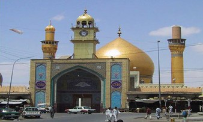
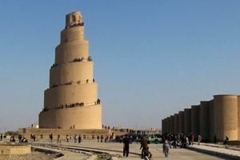 |
Medical Tourism |
| Hammam Al-Alil in Ninewah: It is distinguished by its mineral water which contains chemical specifications suitable for the treatment of the following diseases: Rheumatism and ankylosing. Dermal disease. Gynecologic diseases. Permanent neuroma and neuritis. Gout. Hypothyroidism.
|
| Ain Tamur in Karbala: The most distinguishing things of this oasis are the numerous mineral springs therein; it has become the refuge pursued by the seekers of dermal disease treatment. Ain-Tamur (Dates Spring), named after the plentifulness of dates available there, is located about (67 km) to the southwest of Karbala city. There are many springs of mineral water flowing from their bottoms. It is noticeable that there are plenty of living creatures, which may be seen clearly. The generally low saline water of these springs contains chlorides and sulfates which make it undrinkable. However, they are excellent in the treatment of many diseases, particularly the dermal ones. | |
Tourism Facilities under the Tourism Board |
| Baghdad Island Resort: It is located on Tigris banks, in Al-Fahhama area, some (20 km) to the north of Baghdad. Its area totals around (500 donams) and capacity is (20,000) visitors per day, with a density rated at (63 m2) per visitor. | | Al-A’ras Island Resort: Al-A’ras Island Resort, formerly known as Um al-Khanazir, was opened in 1979 on (678 donam) area. It includes two compounds: A- Al-A’ras Compound. B- Al-Khadhra’ Compound. | | Al-Jadriya Lake: It is located in the Heart of Baghdad, on the banks of Tigris, from which it obtains water. It is one of the resorts that attracts great numbers of local visitors for recreation and entertainment due to its pacific and beautiful tourism location and its pure atmosphere. The tourism business adds additional feature thereto; as the revenues played an important role in its survival and development. It is expected to add a diversity of services offered, in proportion to the visitors’ needs and desires. The island, occupies (270 donams), consists of artificial lake, restaurants, parks, boat anchorages, amusement parks and other touristic activities. | |
|
|